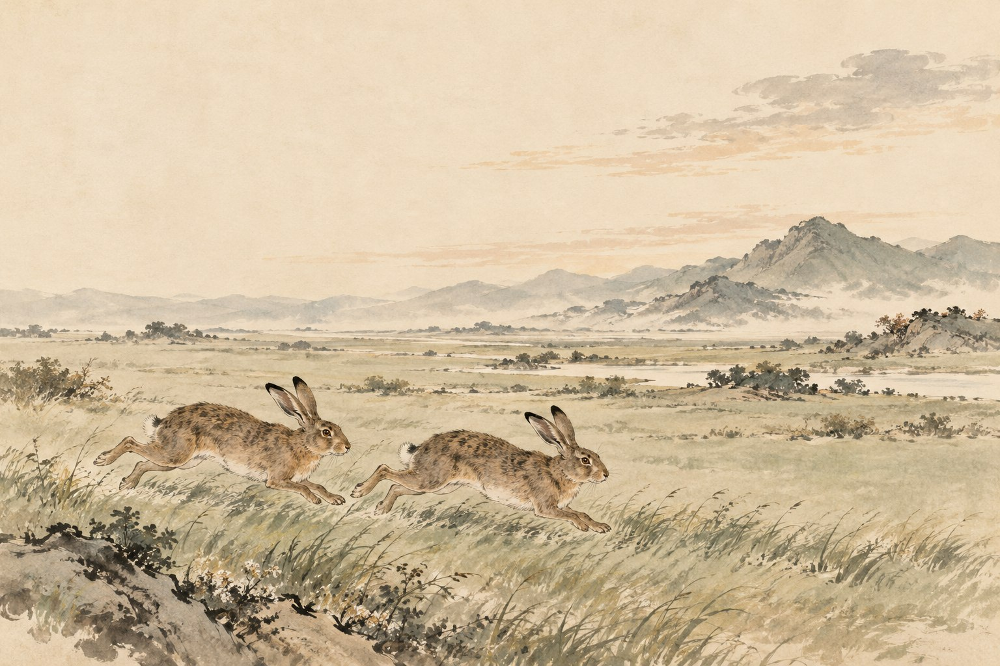

原文点有细线的字词，读音释义即现
慢读先看一幅画，再读一段文。
跟着声音、动作与心愿，读一段出征又归来的旅程。
画卷目录从任意一幕，走进故事
给一起读书的大人
全文九幕、七段，可分三次共读：决定与出发、征战与选择、团聚与双兔。白话、赏读和家长参考按需展开；先让孩子用原句说明观察，不急着给人物贴标签。
白话、赏读和深入讨论按需展开。留给孩子自己的感受，不预设标准读后感。插画是依据文章展开的艺术想象；人物、衣饰、建筑与细节并非历史实景复原。
查看原文版本与资料说明 →停一停 · 你来发现
水墨插画为艺术想象 · 可用键盘 ← → 翻页
把九幕，连成一篇
木兰诗
〔北朝〕佚名
文止于此，回味未止。
把字词，放回句子里
字词小笺
认一个字，也看它在这一句里做什么。
把意思，放回这一句话
市的两种用法
愿为市鞍马：市是购买。
东市买骏马：市是集市。
同形字，不同读音
军帖 tiě：军中的文告。
帖花黄 tiē：同“贴”，贴上装饰。
互相补足着读
将军百战死，壮士十年归：
将士多年征战，有人牺牲，有人归来。

合上书，还能带走什么
把远行与归来一起读
勇气在承担里，
心愿在选择里。
留下一句，属于自己的体会。
留下一句让你看见木兰的诗，再说出你的依据。
只保存在当前浏览器中。
想聊得更深一点：为什么多年征战写得短，回家团聚却写得细？
比较“万里赴戎机”一段和“爷娘闻女来”一段，数一数后者写了多少人物和动作。这样的详略，让你更清楚地看到了木兰的哪些方面？
聊过之后，再读一种理解
诗用少量句子概括行军、严寒、战斗与归来，表现木兰的勇敢和功劳；又细写思亲、辞官、家人迎接和换装，让她的亲情与个人心愿鲜明可感。详略服务于人物的完整形象，并不表示征战不重要。可以有不同侧重，只要回到诗句说明。
走近写下文字的人：佚名
《木兰诗》又称《木兰辞》，通常归为南北朝时期的北朝民歌，作者佚名，后收入北宋郭茂倩编的《乐府诗集》。它在流传中可能经过加工，具体成篇过程仍有讨论。本诗没有交代木兰的姓氏，也不能直接当成某一位历史人物的完整传记。
原文与资料 →纸上
再读第一幕 →给木兰的旅程排一张“诗的时间表”。
在纸上写下“停机—决定—备装—远行—征战—朝见—回家”。任选两段，分别估计故事里经过的时间，再数数诗里写了多少句。用线条标出详写与略写，自己解释诗人把笔墨留在了哪里。
卷末 · 资料与制作
每一篇，都有文字的来处。
原文与版本
采用常见课文全文，分七段、九幕，按诗行展示。正文用“惟闻”“愿驰千里足”“帖花黄”“火伴皆惊忙”“双兔”；另见“唯闻”“愿借明驼千里足”“贴花黄”“伙伴”“惊惶”“两兔”等异文。标点依阅读节奏整理，简体展示。“唧唧”按常见教材释叹息声，另有织机声等解释；本册不将争议释义说成唯一结论。
校核来源：《初中生必背古文》公开资料：《木兰诗》（第46—47页）；维基文库：《木兰诗》与异文。查阅日期：2026 年 10 月 29 日。古文为公版作品；白话、释义、赏读与共读提示为本册重新组织。
读音与理解
军帖的“帖”读 tiě，帖花黄的“帖”读 tiē；可汗读 kè hán，长兄读 zhǎng xiōng，愿为读 yuàn wèi，鞯读 jiān，辔读 pèi，溅溅读 jiān jiān，燕山读 yān shān，金柝读 jīn tuò，转读 zhuǎn，扶将读 fú jiāng，著读 zhuó，裳读 cháng，傍读 bàng。“胡骑”的骑采用现代普通话 qí，旧注可见 jì。诗中“十二”“百战”“十年”等重在多与久，不宜机械按确数推算。
九幅水墨画
插画使用内置 image_gen 工具生成。原图与完整提示词保存在本册制作文件中。水墨画帮助读者想象文章，人物、场所、器物是艺术表现，不是历史照片、科学图鉴或精确实验记录。
离线与书架
单文件 HTML 内含本册插画、样式和交互，可以单独阅读。保留原目录结构时可返回书架或切换篇目。来源链接需要网络。
孩子主动填写的话按篇尝试保存在当前浏览器。移动文件、更换浏览器、设备或隐私模式可能影响保存，请导出重要记录；记录不上传，也不会被打入阅读压缩包。书架不代表孩子已经学习或掌握。
回到封面 →